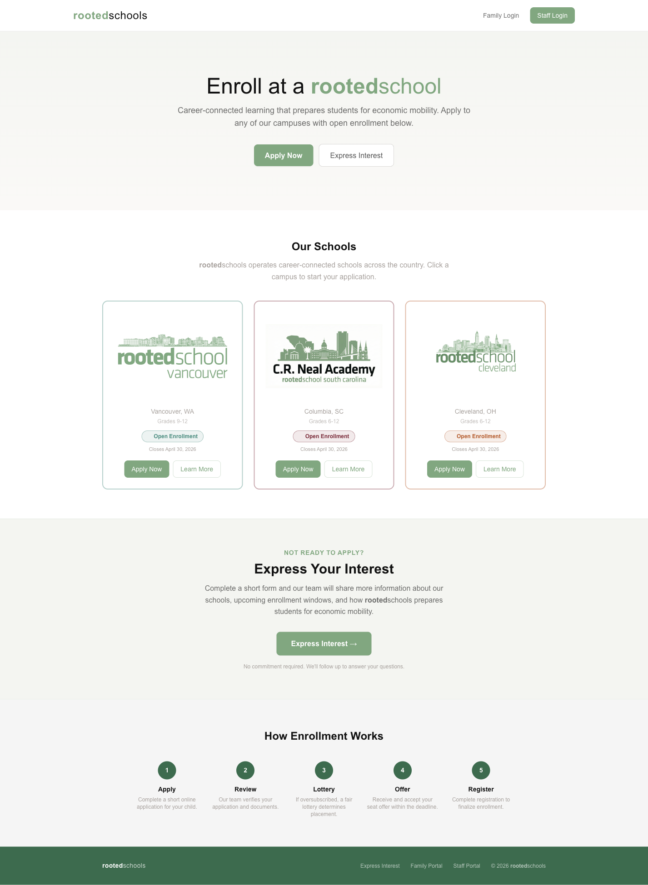
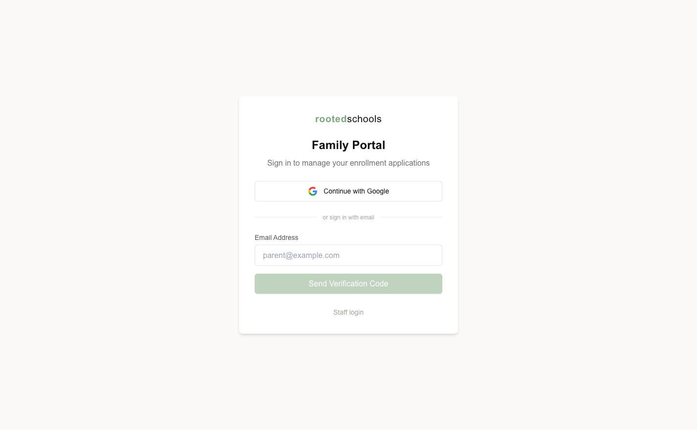
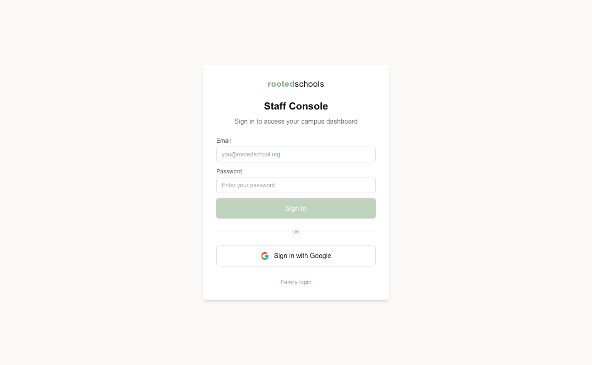
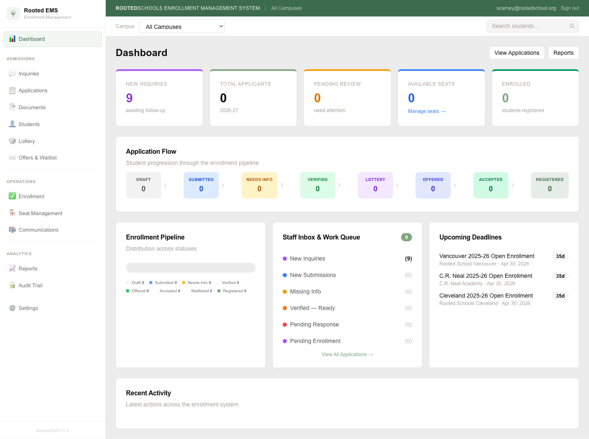
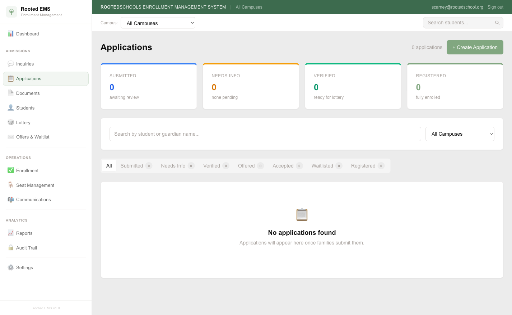
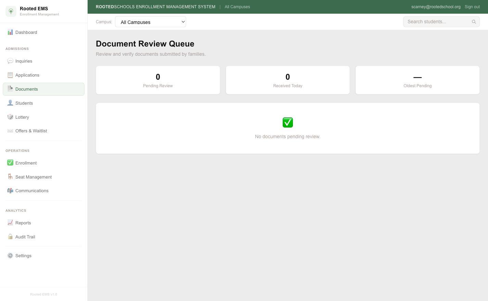
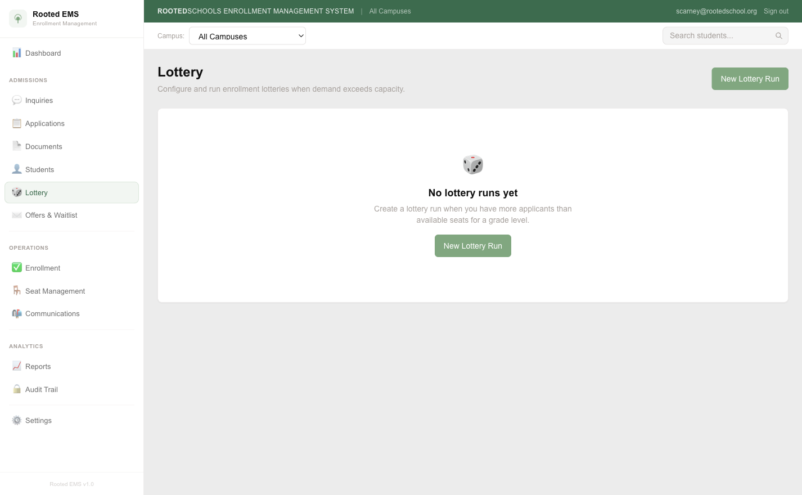
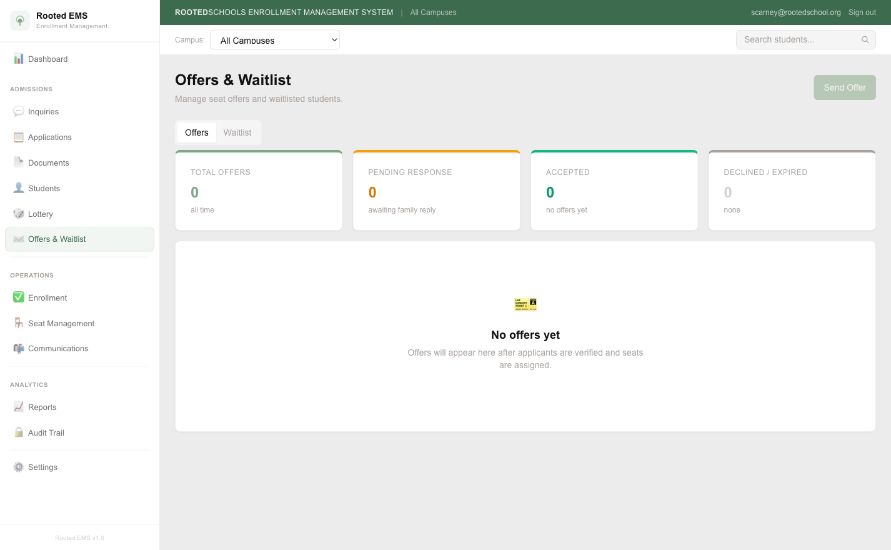
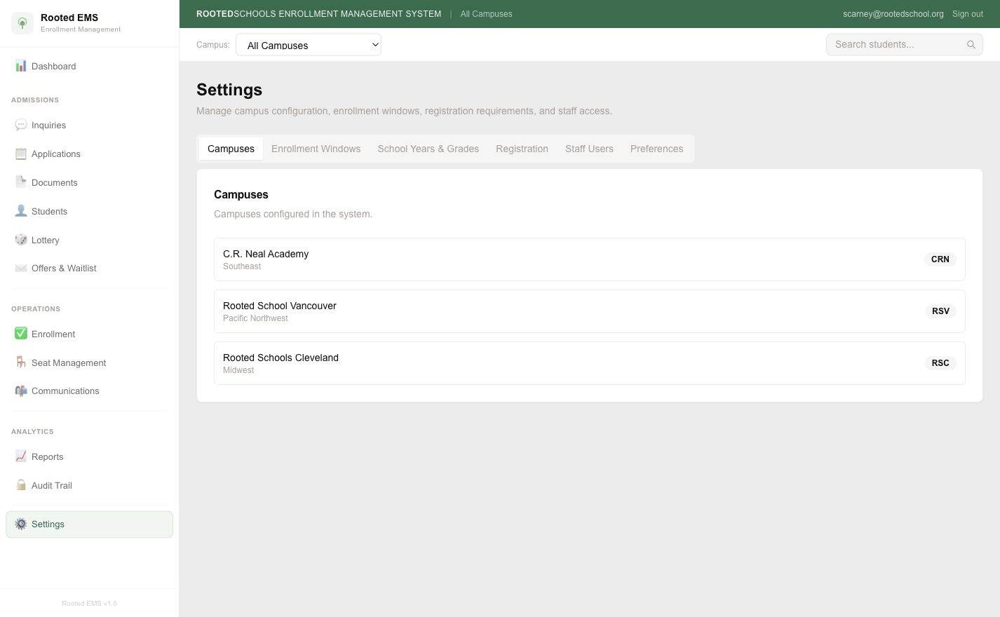

3
Campuses
9
Pages Built
40+
Server Actions
100%
TypeScript
Live
Supabase DB
Public-Facing
Public Homepage
Families land here to learn about each campus and start an application. The enrollment window status ("Open Enrollment" badge) is live-calculated from the database — no manual updates needed.
Live enrollment window status
Campus cards with grade ranges
Single CTA → Family Portal

Homepage — rootedschool.org
All three campuses displayed with live enrollment window data. "Open Enrollment" badges auto-appear when a window is active in the database.
Family Experience
Family Portal
Families use Google SSO or a magic link to sign in. Once inside, they can track application status, respond to offers, and upload required documents — all from one dashboard.
Google SSO + magic link
Real-time offer countdown
Document upload + re-upload
🔔 In-app notifications live

Family Login
Google SSO (one click for returning families) or email magic link. No password to forget. Supabase Auth handles sessions securely via server-side cookies.
Staff Console
Staff Dashboard
Staff log in with email/password or Google. The dashboard shows live pipeline metrics, active enrollment windows, and a work queue (Staff Inbox) surfacing items that need attention right now.
Role-based access (system_admin / enrollment_staff / viewer)
Multi-campus support
Live pipeline counters
Staff Inbox work queue
rootedschool.org/staff-login

Staff Login
Email + password or Google. Middleware enforces campus role before rendering any staff page.
rootedschool.org/staff/dashboard

Staff Dashboard
Live data: 9 new inquiries, 3 active enrollment windows (closing April 30), full pipeline view, Staff Inbox work queue, and upcoming deadlines.
Admissions
Application Queue
Every submitted application surfaces here. Staff can review details, change status, request more information, and trigger document requests — all without leaving the page.
Full status lifecycle
Campus filter
Inline status transitions
Audit log on every action
rootedschool.org/staff/applications

Applications Queue
FIFO queue with status badges, campus filter, and inline action buttons. Every status change writes an audit event with actor, timestamp, and before/after state.
Document Verification
Document Review Queue
Uploaded documents queue here for staff verification. Approving marks a document as verified; rejecting sends an automatic in-app notification to the family explaining what to re-upload and why.
FIFO review queue
Stats bar (pending / today / oldest)
Campus filter
🔔 Auto-notify family on reject
Optimistic UI (no page reload)
rootedschool.org/staff/documents

Document Review Queue
Stats bar shows queue health at a glance. "Oldest pending" turns amber after 3 days — a built-in SLA indicator. Reject dialog requires a written reason that gets sent directly to the family.
Lottery & Waitlist
Lottery Runner
One-click lottery runs for any campus + grade + enrollment window. Siblings of currently enrolled students are automatically placed in Priority Tier 0 before the general pool is randomized. Results finalize immediately and can be pushed to offers.
Sibling priority tier (Tier 0 / Tier 1)
Verifiable random selection
Immediate waitlist auto-promotion
Full audit trail
rootedschool.org/staff/lottery

Lottery Runner
Run the lottery for any campus/grade combination. Siblings are pulled into priority slots first. Results are stored, audited, and ready to convert to offers in one more click.
Seat Offers
Offer Management
Staff send seat offers with a configurable deadline. Families receive an immediate in-app notification with a countdown. When a family declines, the next waitlist candidate is promoted automatically — no waiting until the nightly cron at 2am.
Configurable expiry deadline
🔔 Instant family notification
Auto-promote next waitlist candidate on decline
Revoke with reason
rootedschool.org/staff/offers

Offer Management
Active, accepted, declined, and expired offers tracked in one view. When a seat opens (decline, revoke, or expiry), the next candidate is promoted immediately and notified.
Administration
Settings & Configuration
Enrollment windows, school years, grade levels, and campus configuration are managed here. No code deployments needed to open or close an enrollment window.
Enrollment window open/close
School year management
Campus seat capacity
Grade level configuration
rootedschool.org/staff/settings

Settings
Operational control without code. Opening enrollment for a new school year is a button click, not a deployment. Three active enrollment windows currently configured (all closing April 30, 2026).
Pre-Launch Checklist
Before You Connect to Vercel
Everything the system needs before going live with real families. The build is complete — these are configuration and operational steps, not development work.
✓
Supabase project live
Project szockdlohlmkyloubgtd is running. Auth, database, storage, and RLS policies all configured.
✓
Staff account created
scarney@rootedschool.org has system_admin role on all 3 campuses. Ready to use immediately.
✓
Enrollment windows configured
3 active windows, all closing April 30 2026. Visible on the public homepage with live badges.
✓
In-app notifications wired
Families are notified on: offer received, document rejected (with reason). Works without any external email provider.
✓
Cron job configured (vercel.json)
Nightly offer expiry runs at 2am. Waitlist promotions also happen immediately on decline/revoke — no family waits until 2am to hear good news.
!
Set CRON_SECRET in Vercel environment variables
Generate a random string (e.g. openssl rand -hex 32), add to Vercel as CRON_SECRET. This protects the /api/cron/* endpoints from unauthorized calls.
!
Add production domain to Supabase Auth
In Supabase → Auth → URL Configuration, add your Vercel production URL to "Redirect URLs" so Google OAuth and magic links work after deployment.
!
Add remaining staff accounts
Create Supabase Auth users for each staff member and assign campus roles in the user_campus_role table. Role options: system_admin, enrollment_staff, viewer.
!
Run one end-to-end test application
Before opening to families: submit a test application as a family user, verify it appears in the staff queue, approve/reject a document, run a lottery, send an offer, accept it — confirm enrollment is created.
!
Connect email provider (optional, post-launch)
In-app notifications are live now. To also send email, add Resend API key as RESEND_API_KEY in Vercel. The notification system is already wired — no code changes needed.